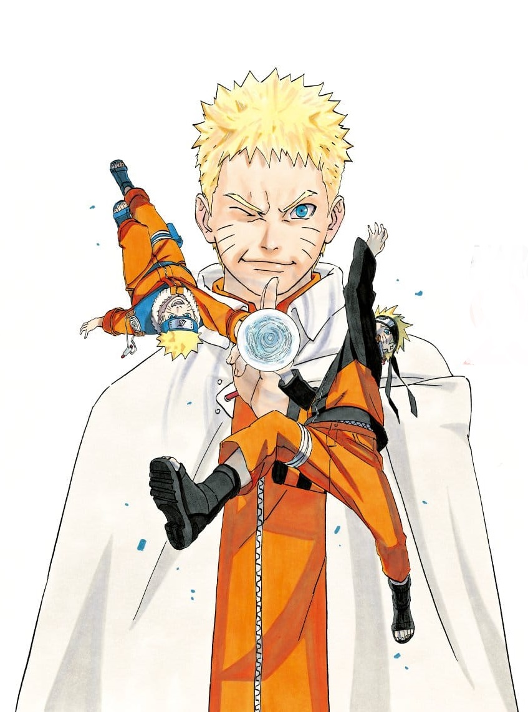
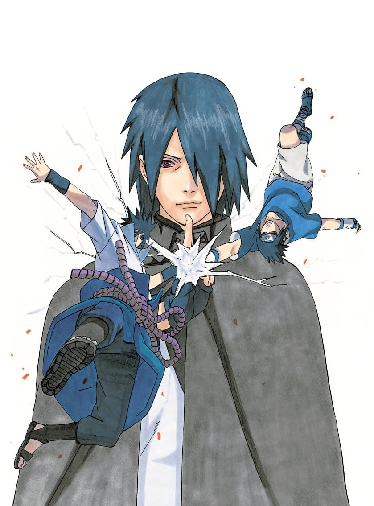
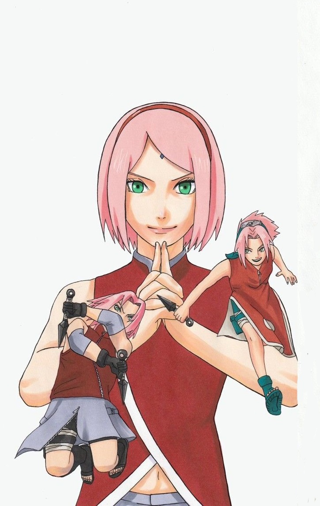

El siguiente es un listado de los personajes de la serie de manga y anime Naruto (ナルト?), creada por Masashi Kishimoto. La serie de manga y anime Naruto (japonés: ナルト) presenta un extenso elenco de personajes creados por Masashi Kishimoto. La serie tiene lugar en un universo ficticio donde los países compiten por el poder empleando ninjas que pueden usar habilidades sobrehumanas en combate. La historia se divide en dos partes, simplemente llamadas Parte I y Parte II, y la última tiene lugar dos años y medio después de la conclusión de la Parte I. Le sigue la serie secuela Boruto: Naruto Next Generations de Ukyō. Kodachi, que continúa donde terminó el epílogo de la primera serie. La historia de la serie sigue las aventuras de un grupo de jóvenes ninjas de la Aldea Oculta en la Hoja.


